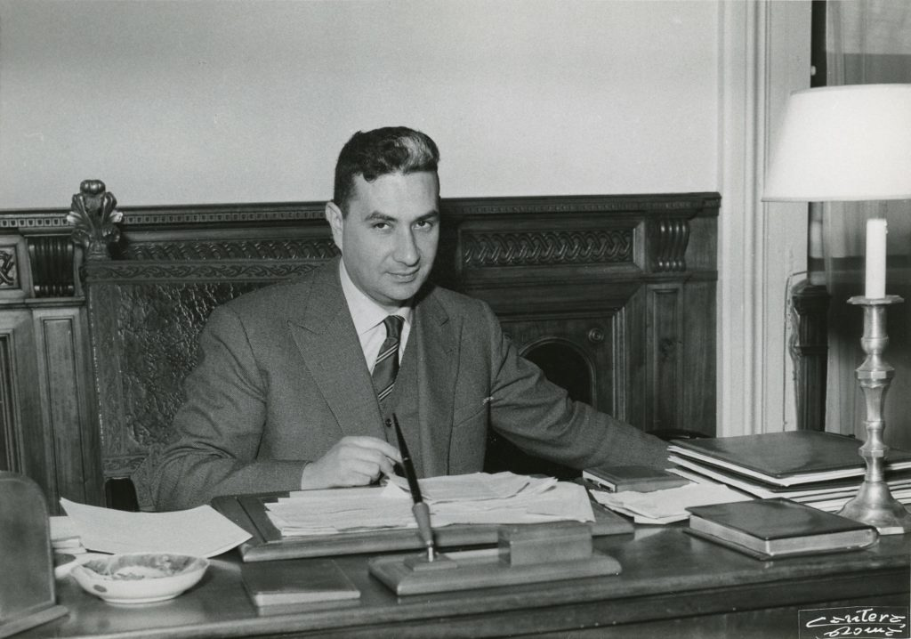
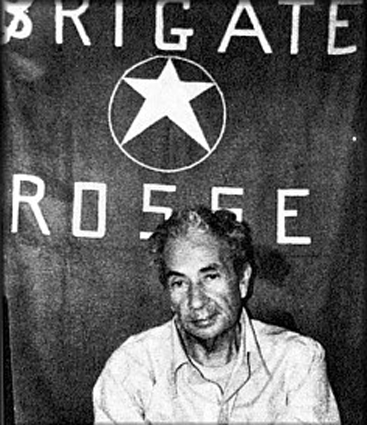
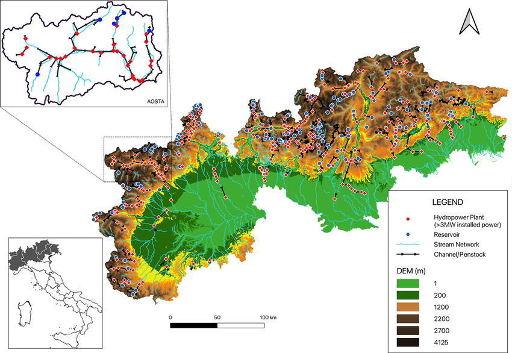
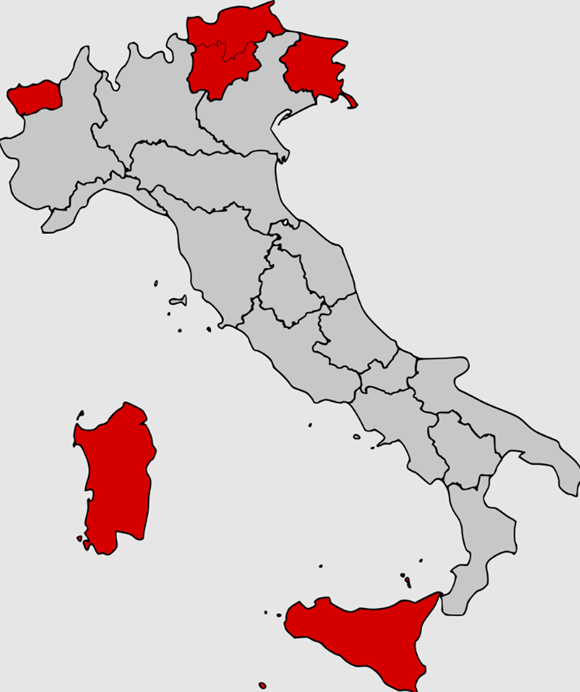
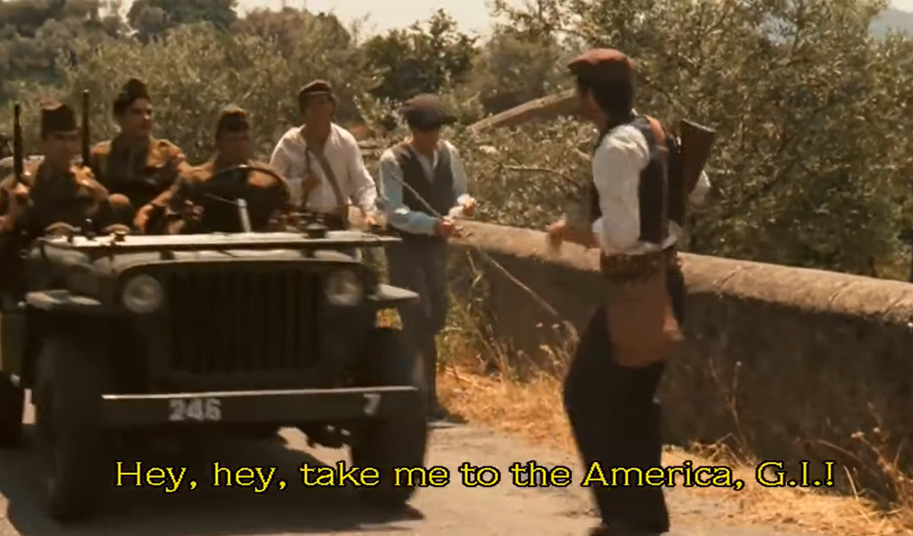
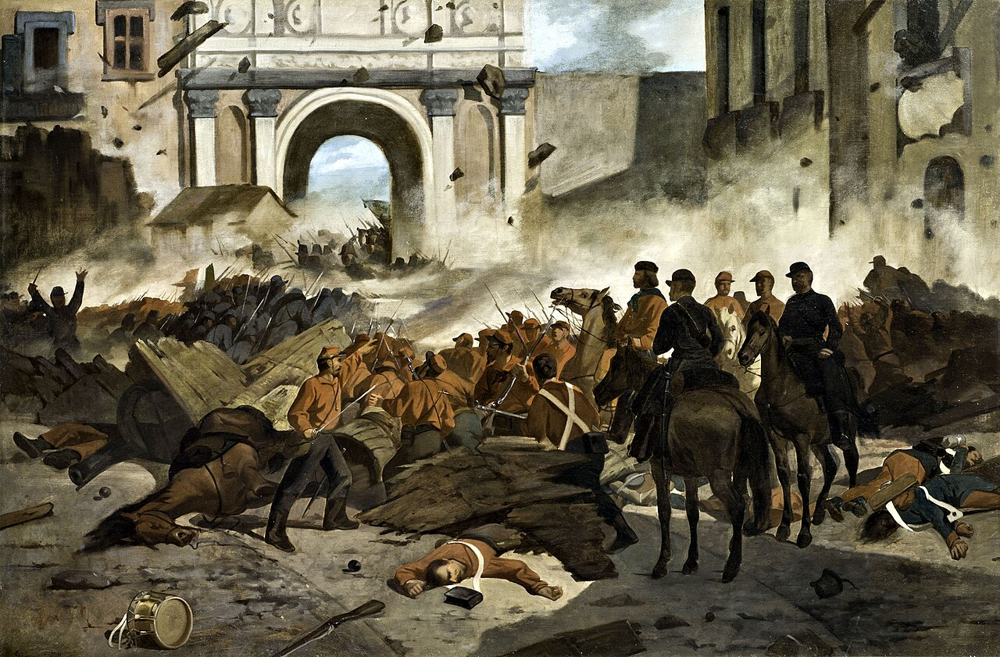
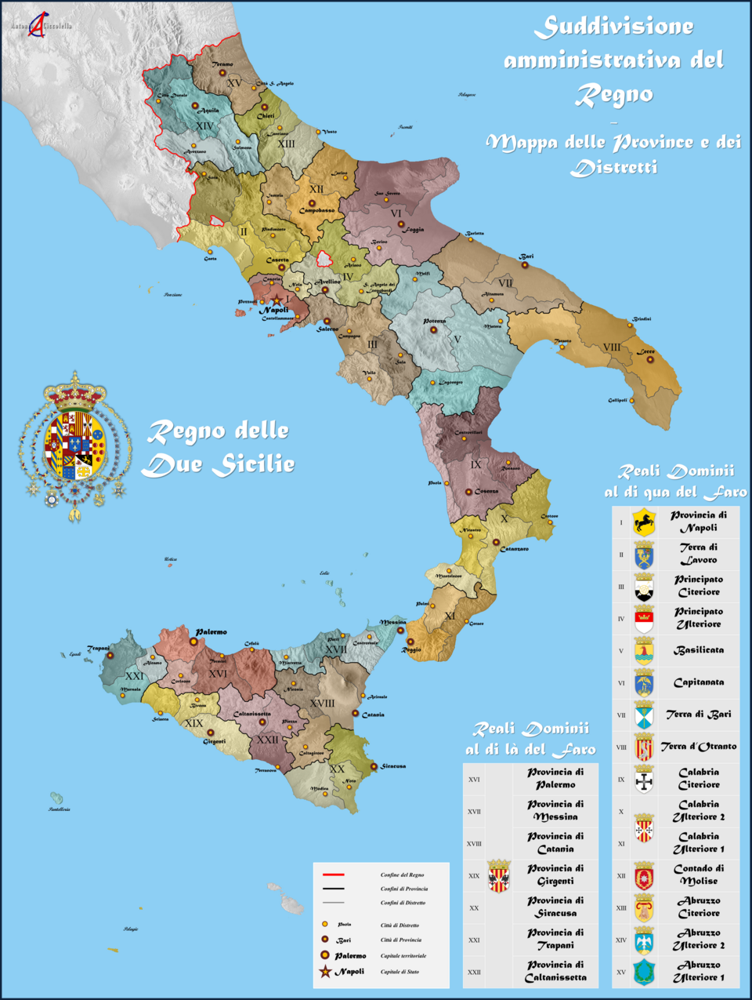
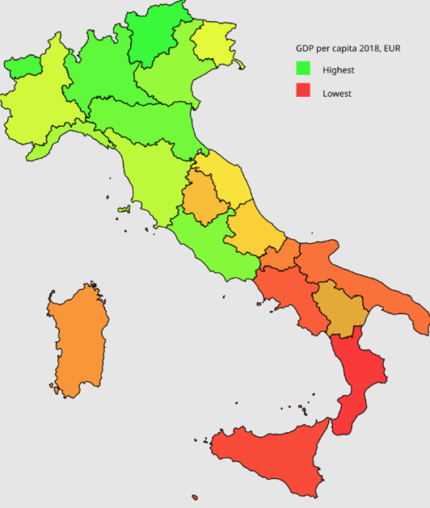

남티롤(Südtirol) 이야기 (9) - 자치권과 세금
게시: 2026-07-16T06:30:59+09:00
1961년 '화염의 밤' 사건에 대한 이탈리아 정부의 대응은 확실히 과한 것이었습니다. 경찰도 아니고 군대를 파겨한여 남티롤의 독일계 주민들을 적국 점령지 주민 취급했을 뿐만 아니라, BAS 용의자로 많은 주민들을 체포하여 고문까지 한 것은 남티롤 주민들 중 온건파조차도 격분시키는 만행이었습니다. 그럼에도 불구하고 SVP 당대표인 마냐고는 더욱 BAS의 강경 과격노선과는 선을 긋고 오로지 자치권 확대에만 치중했습니다. 그는 국내외에서 쏟아지는 나치즘과 범게르만주의에 대한 의심에 대해서도 단호하게 선을 그었습니다. 자신들은 나치와는 달리 자신들은 독일 민족주의를 대외로 확장할 생각이 전혀 없고, 오로지 원하는 것은 남티롤의 자치권뿐이며, 자신들은 이탈리아 중앙정부의 과도한 이탈리아화 정책에 따른 희생자라는 점을 강조했습니다. 이런 입장은 당내외 독일계 강경론자들의 맹비난을 받았습니다. 동지들은 이탈리아 군경에게 불법체포 되어 온갖 고문을 당하며 고초를 겪는데, 자신만 살겠다고 저자세로 꼬랑지를 내리는 것 아니냐는 것이었습니다. 그러나 언제나 폭력보다 비폭력이, 강경노선보다는 타협이 더 위력을 발휘하는 법입니다. 때마침 당시 이탈리아는 유럽경제공동체(EEC)를 주도하며 '선진 민주국가' 이미지를 쌓아야 하는 입장이었습니다. 그런 상황에서 이탈리아 헌병대와 정보기관 SIFAR가 오스트리아와의 국경지대에서 소수민족인 남티롤 독일계를 야만적이고 불법적인 수단으로 박해하고 있다는 국제적 비난은 달가운 것이 아니었습니다. 다행인지 필연인지, 당시 이탈리아 총리는 모로(Aldo Moro)였는데, 이 사람의 정치 모토는 수렴하는 평행선(convergenze parallele)이었습니다. 평행선은 원래 무한대로 가도 만나지 않는 것인데, 그걸 만나게 하자는 정치인이었던 것입니다. 마냐고가 운이 좋았다고 할 수도 있고, 당시 시대 정신에 따른 당연한 결과였다고도 할 수 있습니다. 아무튼 마냐고는 모로 총리를 상대로 서로 타협점을 찾았습니다.

(1959년 알도 모로의 모습입니다. 그는 동서냉전이 험악하던 시대에 이탈리아를 유연하게 이끌며 총 5회나 총리직을 역임했습니다. 그는 철저한 타협형 정치가로서, 그는 WW2 종전 이후 철저히 배제되었던 이탈리아 공산당을 내각으로 끌어들이는 대타협을 시도했습니다. 이 시도는 미국(CIA)과 소련(KGB) 양측 모두가 싫어했습니다.)

(그래서인지, 1978년 공산당과의 연합정권을 공식 승인하는 의회 표결로 향하던 길에 극좌파 테러 단체 '붉은 여단'(Brigate Rosse)에게 납치되었습니다. 이탈리아 정부는 테러 단체와의 협상을 거부했고, 결국 모로 총리는 시체로 발견되었습니다.) 마냐고는 남티롤이 이탈리아의 일부임을 인정하고 오스트리아로 되돌아가겠다는 의도를 영원히 버릴 것이라는 약속과 함께, BAS와 같은 강경 과격파와의 단호한 절연을 약속했습니다. 어떻게 보면 양보하는 것이 없는 것처럼 보이지만, 이건 마치 대만이 중국의 일부임을 인정하고 영원히 독립을 추구하지 않을 것이라는 것을 약속하는 것과 마찬가지의 엄청난 양보였습니다. 모로 총리도 그에 따라 양보를 하긴 했는데, 그래도 체면을 차렸습니다. 아무래도 이탈리아가 30만도 안 되는 남티롤 독일계 주민들의 테러에 굴복했다는 인상을 줄 수는 없었거든요. 그래서 마냐고가 요구하던 트렌티노-알토아디제 광역주를 행정적 분리하는 것은 들어주지 않았습니다. 대신 남티롤에게 특별 권한을 주어, 원래 광역주(Regione)에게만 있는 입법권과 행정권을 남티롤에 해당하는 볼차노(Bolzano) 자치현(Provincia)에게 주었습니다. 즉, 겉으로는 트렌티노-알토아디제 광역주를 유지하지만, 속으로는 남티롤을 광역주로 인정한 것입니다. 뿐만 아니라, 핵심적인 이권도 주었습니다. 남티롤 내에서 징수된 세금의 90%를 남티롤 자치현에서 마음대로 사용할 권한을 준 것입니다. 이 합의는 긴 협상 끝에 1969년 타결되었습니다. 굉장한 특혜인 세금 90%의 자체 집행권을 남티롤에게 부여한 것은 뜻밖의 특혜처럼 보입니다만, 실은 꼭 그렇지만은 않았습니다. 대신 중앙정부에서 내려오는 재정지원도 그만큼 줄이는 것이었으니까요. 또 중앙정부는 이미 남티롤의 알짜 산업인 수력발전소들을 국영화한 뒤였습니다. 당시 남티롤의 수력발전은 이탈리아 전체 발전량의 15%를 차지할 정도로 비중이 큰 산업이었는데, 그것들을 국영화했기 때문에 거기서 나오는 세수가 남티롤 지방정부로 넘어가는 일은 이미 막아둔 상태였습니다. 당시 남티롤은 농업 위주의 가난한 작은 자치현이었으므로 이탈리아 중앙정부로서는 그 세수가 그다지 아쉽지 않았습니다.

(이 그림은 이탈리아 북부 알프스 지방에 집중된 이탈리아 수력 발전소들의 모습을 보여주는 것입니다. 남티롤에도 많은 수의 수력 발전소가 있습니다. 그런데, 1960년대에 국영화 되었던 남티롤의 수력 발전소들은 그 사이에 자본을 축적한 남티롤 지방 정부의 끈질긴 투쟁과 협상, 점진적인 지분 매입 끝에, 결국 2015년 모두 다시 남티롤 지자체의 소유가 되었습니다.) 그리고, 그런 특혜는 이미 전례가 있는 것이었습니다. 이탈리아가 다민족 문제 및 지역 문제로 어려움을 겪는 곳은 남티롤 하나뿐만이 아니었습니다. 슬로베니아계가 많은데다 공산권인 유고슬라비아와 국경을 맞댄 프리울리-베네치아 줄리아(Friuli-Venezia Giulia), 사르데냐, 시칠리아 등 여러 곳이 WW2 직후부터 독립을 하겠다고 들고 일어난 상태였습니다. 특히 시칠리아는 섬이라는 특수성에다 이탈리아 통일 이전부터 비롯된 오랜 북부-남부간의 갈등까지 겹쳐, WW2 직후에는 로마의 지배를 받느니 차라리 미국의 49번째 주가 되겠다고 (비록 마피아 두목이 넣은 것이긴 하지만) 1947년 미국 정부에 청원을 하기도 했었습니다. 그런 분리주의자들을 달래기 위해 이탈리아 중앙정부는 남티롤 못지 않은 자치권과 함께, 해당 광역주에서 걷은 세금을 그 광역주에서 대부분 쓸 수 있도록 하는 파격적인 특혜를 주기도 했습니다. 특히 시칠리아에게는 100% 세금을 시칠리아에 되돌려주도록 했습니다.

(특별 자치권을 받은 이탈리아의 광역주는 총 5개입니다. 본문에 써놓은 3개 광역주 외에 사르데냐 섬과 북서쪽 프랑스와 접경지대라서 프랑스계 주민들이 많은 Valle d'Aosta (아오스타 계곡)입니다.)

(영화 '대부' 1편 중에, 시칠리아로 몸을 피한 알 파치노가 경호원들과 시골길을 걸을 때, 미군 지프가 지나가자 경호원 중 하나가 '미군놈들아, 나도 미국에 데려가줘'라고 외치는 장면이 나옵니다. 당시 시칠리아 민심은 정말 미국의 49번째 주가 되고 싶어해서, 시칠리아 주민들은 동네 여기저기에 성조기를 내거는 경우도 많았다고 합니다.)

(남부가 그렇게 가난해진 이유는 단순하지 않습니다. 1861년 이탈리아가 통일될 때, 북부의 피에몬테-사르데냐 왕국이 '두 시실리 왕국'을 정복하는 형식으로 이루어졌는데, 그때만 해도 남북간 빈부격차가 그렇게까지 심하지 않았고, 국가 재정은 오히려 남부의 두 시실리 왕국이 훨씬 더 튼튼했습니다. 그러나 정복자인 북부가 남부의 국고에 비축되어 있던 금화 등의 자금을 북부의 부채 상환과 산업 투자, 인프라 건설 등에 써버렸습니다. 당시에도 북부의 산업 발전이 조금 더 앞선 상태였는데, 북부 출신이 중심이 된 통일 이탈리아 왕국은 관세 정책도 북부에 맞춰 갑자기 자유무역을 추구하는 바람에 아직 영글지 못했던 남부의 조선업과 기계공업 등이 20년 간 고사되었고, 그 다음에는 갑자기 또 보호무역을 추구하여 북부의 공업을 보호하고 남부의 농업에 타격을 주는 등 일관적으로 남부를 차별하는 정책을 펼쳤습니다. 이 그림은 가리발디의 북부 롬바르디 출신이 주축이 된 레드 셔츠단이 1860년 시칠리아의 수도 팔레르모를 포위 공격하는 모습입니다. 당시 가리발디의 병력은 750명에 불과했고, 팔레르모의 부르봉 왕가 수비군은 1만2천에 달했는데도 가리발디가 결국 승리했습니다. 그렇게 된 이유도 실은 북부 레드 셔츠단 병사들의 자질이 우수했기 떄문은 아닙니다. 두 시칠리아 왕국의 부르봉 왕가는 민심과 완전히 이반되어 있었으므로, 이미 팔레르모 주변에는 수천 명의 현지 게릴라들이 가리발디 편에서 싸웠을 뿐만 아니라, 팔레르모 시민들도 모두 가리발디를 응원하고 지원했습니다. 그러니까 사실 북부가 혼자 힘으로 남부를 정복한 것이 아니라 남부민들이 부르봉 왕가에 저항하여 북부를 지원한 것이었습니다.)

(이야기가 삼천포로 새는 것 같습니다만, 왜 남부 이탈리아 왕국은 이름이 '두 시칠리아 왕국'(Reame delle Due Sicilie, 영어로 Kingdom of the Two Sicilies가 되었을까요? 원래 12세기경 바이킹이 시칠리아 섬과 이탈리아 남부를 점령하면서 생겼던 시칠리아 왕국은 13세기에 프랑스 출신 앙주(Anjou) 가문이 다스리던 중 1282년 시칠리아 주민들의 반란으로 인해 시칠리아 섬의 통치권은 아라곤 왕가로 넘어갔고, 앙주 가문은 이탈리아 남부로 쫓겨났습니다. 그런데 이제 나폴리에 자리 잡은 앙주 가문은 정통성을 주장하며 자기 왕국 이름을 계속 시칠리아 왕국이라고 고집했습니다. 그래서 팔레르모를 수도로 하는 시칠리아 왕국도 시칠리아 왕국이고, 나폴리를 수도로 하는 (사실상의) 나폴리 왕국도 공식 명칭은 시칠리아 왕국이었습니다. 이 두 나라는 수백 년 동안 스페인, 오스트리아 등의 지배를 받으며 일시적 결합과 분리를 반복하다가, 18세기 중반부터 스페인 부르봉 왕가가 두 왕국의 왕위를 동시에 겸임했는데, 1816년 이 두 왕국을 하나로 통합하면서 나라 이름이 '두 시칠리아 왕국'이 된 것입니다.) 그러나 이렇게 자치권과 세금 특혜를 따낸 각 지방들의 운명은 각각 다른 길을 걸었습니다. 가령 프리울리-베네치아 쥴리아 같은 경우, 그렇게 확보한 세수를 낙후된 트리에스테 항구 시설에 집중 투자했을 뿐만 아니라, 자치권을 이용하여 기업들에게 세금 혜택을 주어 여러 기업들을 유치했습니다. 그 결과 트리에스테를 중심으로 상당한 경제적 발전을 이루어 지금은 1인당 GDP에서 전체 20개 광역주 중 8위라는 준수한 성적을 거두었습니다. 그러나 시칠리아는 가장 큰 특혜인 세금 100% 지역내 집행을 따내고도, 이탈리아 내에서 최하위권인 19위를 차지합니다. 덕분에, 시칠리아는 오히려 중앙정부에서 보조금을 받아야 하는 신세입니다.

(이탈리아의 남북 지역 갈등 문제는 우리나라와는 비교가 되지 않을 정도로 심각합니다. 실은 아예 남북 문제라고도 하지 않고 아예 남부 문제(Questione Meridionale)라고 합니다. 이 갈등은 단순히 남부 사람들이 가난하다는 것에 그치지 않고 남부 사람들을 경멸하고 혐오하는 수준이라서 특히 문제입니다. 이 그림은 2018년 기준 이탈리아 자치 광역주들의 1인당 GDP를 보여주는 그림입니다.)
우리의 관심사인 남티롤은 어떨까요? 과거에는 그저 그런 농촌 동네였던 남티롤은 현재 부동의 1위를 지키고 있으며, 밀라노 중심의 롬바르디보다도 더 잘 사는 자치현이 되어 있습니다. 왜 엇비슷한 혜택을 받았는데 남티롤은 이런 눈부신 발전을 이뤄낸 것일까요? 역시 우수한 게르만 민족의 민도(民度)가 높아서일까요?